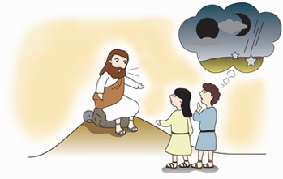
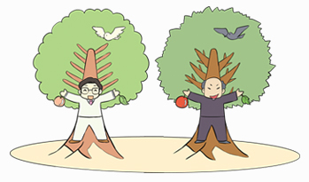
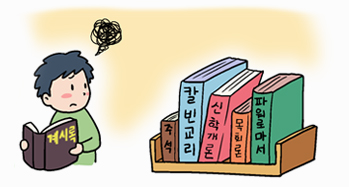

< 말씀대성회 >
- 신천지 스피커
- 신천지는 진리로 이겼으며 성도들이 신천지로 몰려오는 것이 그 증거입니다.
- 말씀대성회 강의노트
- 누가 정통이고 누가 이단인지 편견없이 성경에 입각하여 듣고 판단해 보자.
1. 주 재림과 말세의 징조

궁금!
예수님이 다시 오실때는 무슨 일이 일어나게 되나요? 그때 우리들은 어떻게 되나요? 목사님들마다 답변이 달라서 무엇이 맞는지 모르겠어요.
말씀: 마태복음 24장
마 24장은 주재림과 세상 끝에 있게 될 징조에 대한 말씀으로 계시록의 축소판이기에 계시록에 와서 비로소 모든 내막이 밝혀지는 것입니다. 이 말씀을 알지 못하면 이 말씀대로 이루어졌다 할지라도 믿지 못할 것입니다(요 14:29).
본 장의 사건의 장소는 지구촌 전역이 아닌 거룩한 곳 성전(聖殿) 즉, 하나님의 교회에 서 있어지는 일입니다. 마지막 때에는 예수님께서 하신 이 말씀을 믿고 멸망자가 거룩한 곳에 섰을 때 ‘산’으로 도망가야 합니다.
세상에 산이 많은데 어디로 가야 할까요? 가까운 북한산으로 갈까요? 아니면 세계에서 제일 높은 에베레스트 산으로 가야 할까요? 아닙니다. ‘시온 산’으로 도망가야 합니다. 그 이유는 계시록 14장에 본바 그곳에 어린양 곧, 예수님이 함께하기 때문입니다.
또한 이때 하나님께서 함께 하신 야곱의 가족을 해, 달, 별(창 37:9~11)이라 하심과 같 이 멸망자가 거룩한 곳인 성전을 점령함으로 하나님께서 함께한 성전(하늘) 소속 해, 달, 별의 입장에 있는 사람들이 더는 진리의 빛을 내지 못하고 어두워져 멸망을 당하게 됩니다. 그러나 많은 목사님이 해, 달, 별이 떨어진 이유를 ‘핵폭탄’ 때문이라고 설명합니다. 하지만 핵폭탄을 만 개 떨어뜨린다 한들 하나님이 만드신 해, 달, 별이 떨어질까요? 아닙니다. 이 모든 것은 영적인 뜻입니다. 그러므로 영적 이스라엘 세상 예수교가 진리의 빛이 없는 영적 밤이 되었고, ‘밤에 예수님께서 다시 오신다’고 하는 말씀이 신약 성경에 일곱 번이나 나오고 있습니다.
그런데 오실 적에 주님 혼자 오시는 게 아니죠? 추수꾼 천사(마 13:39)와 함께 오십니다. 오셔서 무엇을 하시는가? 밭에 가서 추수하신다는 것입니다. 밭은 어디입니까? 예수님께서 마태복음 13장 24절에 좋은 씨를 ‘자기 밭’에 뿌렸다고 하셨고, 마태복음 13장 38절에 ‘밭은 세상’이라 하셨으니 예수님 밭 즉, 예수님의 세상(영적 이스라엘 세상) 교회라는 것입니다. 그곳에 천사와 함께 오셔서 예언대로 이룬 말씀을 증거할 때 깨달아 믿는 처음 익은 열매(계 14:4) 알곡 신앙인(렘 23:28), 택하신 자들을 천국 곳간인 시온 산 12지파(계 7:4)로 모으는 일이 있게 됩니다.
2. 두 가지 씨와 추수
궁금!
성경에서 말하는 씨는 무엇인가요? 그리고 어째서 씨는 두 가지 인가요? 알곡은 추수되어 간다는데 어디인지 궁금합니다.
말씀: 마태복음 13장
마태복음 13장은 예수님께서 하신 천국 비유에 관한 말씀으로 초림 때 이루어진 일과 재림 때 이루어질 일을 말씀하신 내용입니다.
비유로 말씀하신 이유는 두 가지입니다. 하나는 시편 78편 2절에 예언된 말씀을 이루기 위함이었고(마13:34~35), 또 하나는 너희와 저희가 있어 ‘저희’라는 자들이 천국 말씀을 깨달아서는 안 되기 때문입니다(마 13:10~16). 너희는 12제자를 뜻하는 것이요, 저희는 서기관, 바리새인들을 뜻하는 것이었습니다. 서기관과 바리새인들이 깨달아서는 안 되는 이유는 그 안에 들어있는 영이 마귀이기 때문입니다. 그래서 예수님께서 ‘뱀’이라고 하신 것이죠.
그러나 이제는 깨달아 아는 입장이 되어서 너희가 되길 바라는 마음으로 참뜻을 알려드립니다.
약 2,600년 전 하나님께서는 예레미야에게 ‘유다와 이스라엘 집에 두 가지 씨를 뿌릴 것’(렘 31:27)을 약속하시고 600년이 지나 예수님에게 오셔서(마 3:16, 마 4:17) 좋은 씨를 예수님 밭에 뿌리셨고 마귀 신과 하나 된 목자들은 가라지를 덧뿌렸습니다. 이때 씨는 영의 씨, 말씀으로(눅 8:11), 좋은 씨는 하나님의 씨인 진리(생명)의 말씀이요 가라지는 사단의 씨인 비진리(사망)의 말입니다.
이 두 가지 씨는 2,000년 간 한 장소인 자기 밭 즉, 예수교회(마 13:24, 37~38)에서 자라다가 추수 때인 세상 끝에 이르러 추수되게 됩니다. 추수 때 좋은 씨인 진리의 말씀을 소유한 알곡 신앙인(약 1:18)은 추수되어 곳간으로 가지만, 사망의 씨인 비진리를 소유한 가라지 신앙인은 자기 밭(교회)에서 단으로 묶여 심판받게 됩니다(마 13:30). 추수 때는 반드시 자기 교회(밭)에서 알곡이 모이는 곳간에 추수되어 가야 구원이 있습니다. 자기 교회에 남아 있는 자는 가라지가 되어 단에 묶여, 구원받지 못하고 지옥 불에 들어감을 알아야 합니다.
그렇다면 추수 때인 세상 끝은 언제이며, 알곡이 추수되어 가는 곳간은 어디일까요? 마지막 때 멸망자가 거룩한 곳에 서게 되고 해, 달, 별이 빛을 잃고 떨어져(마 24:15, 29) 어두운 밤이 되니, 이것이 영적 이스라엘 세상 즉, 씨 뿌린 예수교회(밭)의 끝 곧 추수 때인 세상 끝입니다. 이때 예수님과 함께 온 천사들이 추수꾼을 낫 삼아 추수(계 14:14~16)할 때 알곡은 추수꾼의 말을 듣고 예수님이 계신 시온 산(계 14:1, 4) 12지파 곳간으로 추수되어 가지만, 가라지는 초림 때와 마찬가지로 자기 교회 목자의 말에 묶여 심판을 받게 됩니다.
3. 선악나무와 생명나무

궁금!
아담과 하와가 먹은 선악나무는 사과처럼 먹을 수 있는 건가요? 독이 들어 있어서 죽은 건가요? 그리고 성경에 나오는 생명나무는 무엇인가요?
말씀: 창세기 2~3장
우리가 생명나무와 선악나무를 알아야 하는 이유는 그 나무 열매 하나 때문에 아담 이후로 6,000년이라는 긴긴 세월 동안 모든 사람이 사망에 빠졌기 때문입니다. 생명나무 실과를 먹으면 영생을 하고, 선악을 알게 하는 나무 즉, 선악나무의 실과는 사망을 가져 왔지요.
과연 생명나무와 선악나무가 무엇인지 분명히 알아서 올바른 신앙을 하는 목사님들과 성도님들이 되시기를 소망합니다.
첫 번째로 알아야 할 것은 생명나무와 선악나무가 한곳(에덴동산)에 있다는 것입니다.
하나는 미국에 있고 하나는 일본에 있고 그런 것이 아니라는 것입니다.
씨는 자라서 나무가 되지요. 약 2,600년 전 예레미야를 통해 두 가지 씨가 뿌려질 것을 예언하신 하나님 말씀대로, 예언하신 지 약 600년 후 두 가지 씨 즉, 하나님의 씨(생명의
말씀 곧 생명의 씨)와 마귀의 씨(비진리 곧 사망의 씨)가 한 곳(예수님의 밭)에 뿌려졌지요.
그 생명의 씨로 자란 나무가 생명나무이며 사망의 씨로 자란 나무가 선악나무입니다. 그렇다면 생명나무와 선악나무의 실체는 무엇일까요? 초림 때, ‘참 포도나무’이셨던 예수님이 길이요 진리요 생명(요 15:1~5, 요 14:6)이셨기에 예수님이 생명나무의 실체였고, 12제자들은 생명나무의 12가지였습니다. 또한 예수님의 말씀이 생명나무 실과였습니다.
반대로 뱀이요(마 23:33) 무덤이요, 독사의 악독함이 가득한 ‘들 포도나무(신 32:33)’ 인 서기관·바리새인들도 있습니다. 이들이 곧 사단 사망의 씨 비진리로 난 선악나무이고 그들에게서 나오는 비진리의 말이 선악과입니다.
중요한 것은 오늘날 재림 때의 생명나무와 선악나무를 깨달아 아는 것입니다.
하나님께서 거니셨던 에덴(창3:8)에 두 가지 나무가 있었듯이, 오늘날 예수님의 밭인 기독교 세계에 두 가지 씨가 뿌려져 왔고(마 13:24~25) 그것이 생명나무와 선악나무로 자랐으며, 각각의 결론은 천국과 지옥입니다. 성경의 결론인 계시록 때는 드디어 선악나무는 심판받아 없어지고 생명나무만 남게 됩니다(계 18장, 계 21, 22장).
4. 계시와 믿음

궁금!
계시록 내용은 엄청 어렵게 설명되어 있는데 어떤 말씀이고, 어디에서 어떻게 이루어지게 되는 것인가요?
말씀: 요한계시록 1장 1~8절
요한계시록은 약 2,000년 전 예수님의 제자 요한이 재림 때에 있을 장래사를 기록한 예언의 말씀입니다. 계시(啓示)라는 말은 ‘열어서 보인다’는 뜻으로 이루기 전에는 ‘묵시’라고 할 수 있고, 이룬 것을 보여 줄 때는 ‘계시’라 하겠습니다.
계시는 내용적으로 예언적 환상계시와 성취되어 나타난 실상계시, 이렇게 두 가지로 나뉩니다. 2,000년 전 사도 요한이 봤던 계시는 환상계시 곧 예언이고, 예언이 이루어질 때는 실상계시로 이루어지는 것입니다. 실상이라는 것은 예언이 이루어진 실체를 뜻합니다. 그래서 하나님께서는 예언이 이루어져 실상이 나타났을 때 믿으라고 우리에게 성경을 주셨습니다(요 14:29). 또한, 이 계시는 시대적으로는 구약 계시와 신약 계시로 나뉩니다.
구약 때 이사야를 통해 모든 묵시가 마치 봉해져 유식한 자도 무식한 자도 읽을 수 없는 소경이 되어 사람의 계명으로 가르치고 있을 때 가장 기이한 일을 다시 행한다 하시고(사 29:9~14) 이 묵시는 정한 때가 되면 이룬다 하셨습니다(합 2:2~3). 나아가 이룰 때 펼쳐진 계시를 에스겔이 받아 먹고 사로잡힌 패역한 선민에게 전하게 될 것이 예언되었고(겔 1,2,3장) 이 구약의 예언이 예수님 초림 때 이루어진 것입니다(마 15:7~9, 14, 24).
하나님을 알고 신앙인의 소망인 천국과 영생을 얻기 위해서는 예수님을 통해 반드시 계시를 받아야 했던 것입니다(마 11:27, 요 17:3).
이처럼 신약에 있는 예수님의 계시는 반드시 속히 될 일인데, 그 목적은 바로 종들에게 보이시기 위한 것입니다(계 1:1). 이 속히 될 일의 계시가 전달되는 과정으로 먼저는 하나님께서 하나님 오른손에 일곱 인으로 봉해진 책(묵시)을 예수님에게, 예수님은 봉한 책의 인을 떼어 펼친 책(계시)을 천사에게, 천사는 사도요한에게, 사도요한은 종들에게 전해주게 됩니다(계 5, 6, 8, 10 장). 따라서 종들은 그 말을 듣고 지켜야만 복을 받게 되므로, 오늘날 이 예언대로 나타나는 사도요한 격 목자가 예언대로 이룬 것을 계시의 노정을 따라 보고 들은(계 1:2, 계 22:8) 계시를 듣고 깨달아 하나님의 복 받는 신앙인이 되어야겠습니다.